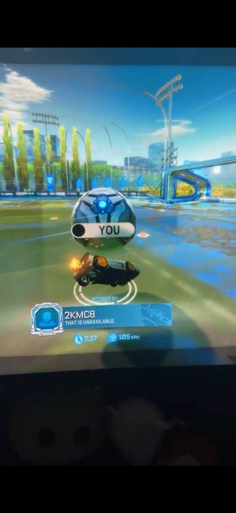
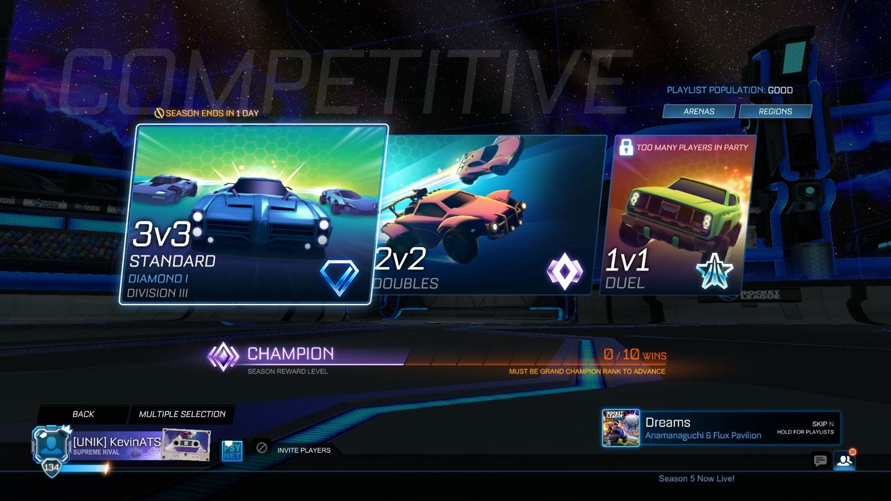

Jugar Videojuegos
Me encanta jugar videojuegos, de cualquier tipo. Me parece increible lo inmensos que pueden llegar a ser, desde explorar un mundo entero a explorar universos enteros desde tu computadora o consola. En general son muy entretenidos y buenos para pasar el rato.
Tambien me gusta tomarlos de forma mas competitiva y jugar torneos.
